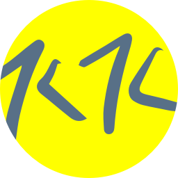

Today
Maker's Schedule, Manager's Schedulepaulgraham.com
The Tail Endwaitbutwhy.comlife
Yesterday
Steve Jobs' 2005 Stanford Commencement Addressyoutube.com
Choose Boring Technologymcfunley.com

1,000 True Fanskk.org